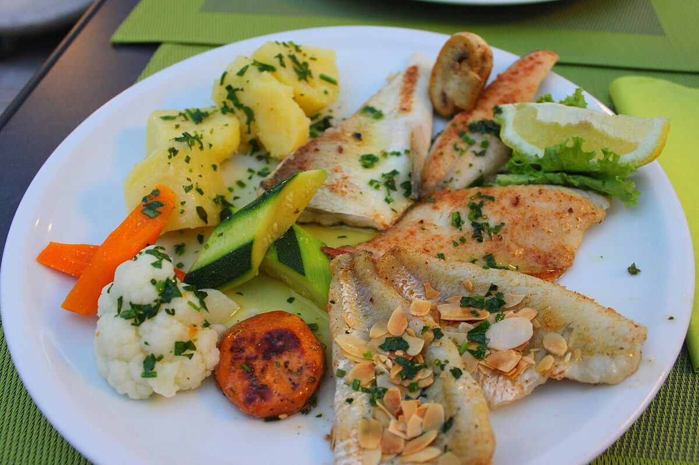

Dlaczego okoń i sandacz są stworzone na patelnię
Mięso okonia
Okoń ma jedno z najsmaczniejszych mięs wśród polskich ryb słodkowodnych: białe, zwięzłe, chude (poniżej 1% tłuszczu) i delikatnie słodkawe, bez śladu posmaku mułu nawet u ryb z wód stojących. Filety są niewielkie — z okonia 25–30 cm uzyskasz dwa płaty po kilkadziesiąt gramów — dlatego na obiad dla dwóch osób trzeba kilku ryb. Drobne, mocno osadzone łuski najlepiej ominąć, ściągając skórę razem z nimi przy filetowaniu. Ości poza pasem żebrowym praktycznie nie przeszkadzają. Krótkie smażenie w cienkiej panierce to dla okonia przyrządzenie idealne: mięso zostaje soczyste, a panierka podbija jego naturalną słodycz.
Mięso sandacza
Sandacz to ryba z górnej półki — w restauracjach bywa droższy od łososia. Jego mięso jest jasne, chude, o dużych, wyraźnych płatkach i bardzo delikatnym, neutralnym smaku, dzięki czemu lubią go nawet osoby nieprzepadające za rybami. Filety są duże i kształtne, łatwe do równego usmażenia, a ości po wycięciu pasa żebrowego i linii bocznej niemal nie występują. Sandacza warto smażyć ze skórą: oprószony tylko mąką i położony skórą do dołu na dobrze rozgrzanym tłuszczu daje efekt chrupiącej skórki i kremowego wnętrza. Delikatne mięso łatwo jednak przesuszyć — czasy smażenia trzymaj krótkie i nie podgrzewaj ryby „na zapas".
Przepis podstawowy — smażone filety panierowane
Składniki (dla 2–3 osób)
- 500–600 g filetów z okonia lub sandacza (bez ości; okoń bez skóry, sandacz może być ze skórą)
- 3–4 łyżki mąki pszennej
- 1–2 jajka, rozkłócone
- 4–5 łyżek bułki tartej
- sól i świeżo mielony pieprz
- 1 cytryna (połowa do skropienia filetów, połowa do podania)
- 3–4 łyżki masła klarowanego lub oleju rzepakowego (ewentualnie pół na pół)
Przygotowanie krok po kroku
- Filety osusz dokładnie ręcznikiem papierowym — mokra ryba „strzela" w tłuszczu i nie trzyma panierki. Skrop sokiem z cytryny, opcjonalnie odstaw na 10–15 minut do lodówki.
- Tuż przed smażeniem oprósz filety solą i pieprzem z obu stron (solenie dużo wcześniej wyciąga sok z mięsa).
- Przygotuj trzy płaskie talerze: mąka, rozkłócone jajko, bułka tarta. Panieruj kolejno: mąka (strzepnij nadmiar), jajko, bułka tarta — dociśnij dłonią, by panierka przylgnęła.
- Rozgrzej tłuszcz na patelni (warstwa ok. 3–5 mm) na ogniu średnim do średnio-wysokiego, do ok. 170°C — wrzucona okruszyna bułki powinna od razu wesoło skwierczeć i złocić się w ok. 30 sekund.
- Układaj filety bez ścisku (smaż partiami!) i smaż 3–4 minuty na stronę, do złotego koloru; cienkie filety okonia wystarczą 2–3 minuty na stronę. Filet ze skórą zaczynaj od strony skóry i smaż ją 4 minuty, potem 1–2 minuty z drugiej strony. Przewracaj tylko raz.
- Ryba jest gotowa, gdy mięso jest nieprzezroczyste w całym przekroju i łatwo rozdziela się na płatki widelcem (w najgrubszym miejscu min. 63–70°C).
- Odsącz filety na ręczniku papierowym lub kratce 1–2 minuty i podawaj natychmiast, z ćwiartką cytryny.
Trzy warianty panierki
Wariant 1: klasyczna panierka trójstopniowa
Opisana w przepisie podstawowym — mąka, jajko, bułka tarta. Daje najgrubszą, najbardziej chrupiącą skorupkę i najlepiej chroni delikatne mięso przed wysuszeniem; to panierka „smażalniowa", którą większość z nas zna z dzieciństwa.
- 3–4 łyżki mąki pszennej
- 1–2 jajka rozkłócone z łyżką mleka lub wody
- 4–5 łyżek bułki tartej (część można zastąpić panko dla ekstra chrupkości)
- sól, pieprz; opcjonalnie słodka papryka lub suszony koperek do bułki
- Doprawioną, osuszoną rybę obtocz w mące i strzepnij nadmiar.
- Zanurz w jajku, odsącz, obtocz dokładnie w bułce tartej i dociśnij.
- Smaż na średnim ogniu 3–4 minuty na stronę; ta panierka łatwo się przypala, więc nie podkręcaj ognia za mocno.
Wariant 2: tylko mąka — najlżejsza i najszybsza
Minimalizm dla tych, którzy chcą czuć przede wszystkim rybę. Cieniutka mączna skorupka świetnie pasuje do sandacza smażonego na skórze i do drobnych filetów okonia. Z mąki pszennej wychodzi delikatna, z dodatkiem ziemniaczanej lub ryżowej — wyraźnie bardziej chrupiąca.
- 3 łyżki mąki pszennej (opcjonalnie 1 łyżkę zastąp mąką ziemniaczaną)
- sól, pieprz
- masło klarowane do smażenia
- Filety osusz bardzo starannie, dopraw, obtocz w mące i dokładnie strzepnij nadmiar — gruba warstwa mąki robi się gumowata.
- Smaż na dobrze rozgrzanym maśle klarowanym 2–3 minuty na stronę (filet ze skórą: 3–4 minuty od strony skóry, 1 minutę z drugiej).
- Na koniec możesz dorzucić na patelnię łyżkę świeżego masła i ząbek czosnku i przez 30 sekund polewać rybę pianką.
Wariant 3: ciasto piwne — styl fish & chips
Puszysta, głośno chrupiąca skorupa, pod którą ryba gotuje się we własnej parze. Wymaga głębszego tłuszczu, ale efekt wynagradza pracę — zwłaszcza przy większych kawałkach sandacza.
- 150 g mąki pszennej (plus 2–3 łyżki do obtoczenia ryby)
- ok. 200 ml zimnego piwa jasnego
- 1 łyżeczka proszku do pieczenia
- 1/2 łyżeczki soli; opcjonalnie szczypta słodkiej papryki
- olej rzepakowy do smażenia (warstwa min. 2–3 cm)
- Wymieszaj mąkę, proszek i sól, wlej zimne piwo i połącz krótko trzepaczką — ciasto ma mieć konsystencję gęstej śmietany, drobne grudki nie szkodzą. Użyj od razu, póki jest zimne i napowietrzone.
- Rozgrzej olej do 175–180°C. Kawałki ryby obtocz w suchej mące, potem zanurz w cieście i pozwól ociec nadmiarowi.
- Wkładaj rybę do oleju, przytrzymując pierwsze 2–3 sekundy za koniec, żeby nie przykleiła się do dna. Smaż 4–6 minut, w połowie obracając, do intensywnie złotego koloru. Smaż po 2–3 kawałki naraz.
- Odsącz na kratce (nie na papierze — skorupka zaparowuje) i dosól od razu po wyjęciu.
Temperatura tłuszczu i najczęstsze błędy
Jaki tłuszcz i jaka temperatura
Optymalna temperatura smażenia ryby to ok. 160–180°C: poniżej 150°C panierka nasiąka tłuszczem i robi się blada, powyżej 190°C przypala się, zanim mięso się zetnie. Bez termometru sprawdzisz to okruszyną bułki (powinna się zezłocić w ok. 30 sekund) albo drewnianą łyżką — przy właściwej temperaturze wokół zanurzonego trzonka tworzą się żwawe bąbelki. Najlepsze tłuszcze to masło klarowane (świetny smak, punkt dymienia ok. 250°C), olej rzepakowy rafinowany i mieszanka obu. Zwykłe masło pali się przy ok. 150°C — można je dodać tylko na sam koniec smażenia, dla smaku. Oliwa extra vergine i oleje tłoczone na zimno zostaw do surówek. Po włożeniu ryby temperatura tłuszczu spada — dlatego smaż małymi partiami i daj tłuszczowi wrócić do temperatury między partiami.
Błędy, które psują smażoną rybę
- Mokra ryba — panierka odpada, tłuszcz pryska. Zawsze osuszaj filety ręcznikiem papierowym.
- Zimna lub za gorąca patelnia — w zimnym tłuszczu ryba nasiąka i się rozpada, w przepalonym panierka czernieje przy surowym środku.
- Tłok na patelni — temperatura spada i ryba zaczyna się dusić zamiast smażyć. Lepiej dwie partie niż jedna ściśnięta.
- Ciągłe przewracanie i ruszanie — filet przewracamy raz; szarpanie łamie mięso i zrywa panierkę. Jeśli ryba „nie chce puścić" patelni, to znak, że jeszcze za wcześnie.
- Za długie smażenie — najczęstszy grzech: chude mięso okonia i sandacza po przekroczeniu czasu robi się suche i włókniste. Lepiej zdjąć rybę o pół minuty wcześniej i dać jej minutę odpoczynku.
- Solenie z dużym wyprzedzeniem — sól wyciąga wodę, mięso wiotczeje, a panierka wilgotnieje. Sól tuż przed panierowaniem.
- Smażenie ryby prosto z lodówki w grubych kawałkach — bardzo zimny, gruby filet zdąży się przypalić z zewnątrz, zanim ogrzeje się w środku; wyjmij rybę 15 minut wcześniej.
Dodatki, które zawsze pasują
Ziemniaki i surówki
Klasyka nad klasyki: młode ziemniaki z wody z masłem i koperkiem, puree ziemniaczane albo frytki/łódeczki z piekarnika do wariantu w cieście piwnym. Z surówek najlepiej sprawdzają się te chrudkie i kwaskowe, które przecinają smażony tłuszcz: surówka z kiszonej kapusty z marchewką i olejem, mizeria ze śmietaną i koperkiem, surówka colesław, tarta marchewka z jabłkiem czy po prostu sałata masłowa w lekkim sosie winegret. Latem wystarczą pomidory z cebulką i odrobiną śmietany. Do tego obowiązkowo ćwiartka cytryny — kwas ożywia smak białego mięsa jak nic innego.
Sosy: tatarski i koperkowy
Dwa sosy, które z panierowaną rybą tworzą duet doskonały. Sos tatarski: wymieszaj 4 łyżki majonezu z 2 łyżkami gęstej śmietany lub jogurtu, dodaj 2 drobno posiekane ogórki konserwowe, łyżkę kaparów lub marynowanych grzybków, pół drobno posiekanej cebulki (lub szczypiorek), łyżeczkę musztardy i posiekane jajko na twardo; dopraw solą, pieprzem i odrobiną zalewy ogórkowej. Najlepszy po pół godzinie „przegryzania" w lodówce. Sos koperkowy: na ciepło — w rondelku rozpuść łyżkę masła, dodaj łyżkę mąki, zasmaż chwilę, wlej szklankę bulionu (świetnie pasuje rybny), zagotuj, dodaj 3–4 łyżki śmietanki 30% i duży pęczek posiekanego koperku, dopraw solą, pieprzem i sokiem z cytryny; na zimno — po prostu jogurt grecki z koperkiem, czosnkiem i cytryną. Tatarski lubi wersję chrupiącą w bułce i cieście piwnym, koperkowy — delikatnego sandacza z mąki.
FAQ — najczęstsze pytania
Smażyć ze skórą czy bez?
Sandacza — najlepiej ze skórą (oskrobaną z łusek): zabezpiecza delikatny filet i usmażona na chrupko jest przysmakiem sama w sobie. Okonia — zwykle bez skóry, bo jego drobne łuski trudno się skrobie i prościej ściągnąć skórę przy filetowaniu. W panierce trójstopniowej i cieście piwnym skóra nie jest potrzebna; przy smażeniu na samej mące skóra sandacza to atut.
Czy mogę usmażyć rybę z mrożonych filetów?
Tak, i często to wręcz wskazane (mrożenie w −20°C przez co najmniej 7 dni unieszkodliwia pasożyty). Kluczowe jest rozmrażanie: powoli, przez noc w lodówce, a przed panierowaniem bardzo dokładne osuszenie — rozmrożona ryba puszcza dużo wody. Nie smaż fileta zamrożonego ani rozmrażanego w ciepłej wodzie; raz rozmrożonej ryby nie zamrażaj ponownie.
Jak poznać, że ryba jest dosmażona, ale nie przesuszona?
Mięso w najgrubszym miejscu powinno być matowe, nieprzezroczyste i rozchodzić się na płatki pod lekkim naciskiem widelca; sok wypływający z fileta jest klarowny. Termometr szpilkowy to pewniak: 63–70°C w środku. Orientacyjnie filet o grubości 1,5–2 cm potrzebuje łącznie 6–8 minut, cienki filet okonia 4–6 minut. Pamiętaj, że ryba „dochodzi" jeszcze minutę po zdjęciu z patelni.
Co zrobić, żeby panierka nie odpadała?
Cztery zasady: sucha ryba (ręcznik papierowy), cienka warstwa mąki ze strzepniętym nadmiarem (to ona „skleja" jajko z rybą), dociśnięcie bułki dłonią oraz dobrze rozgrzany tłuszcz i spokój — przewracamy raz, gdy spód jest złoty i sam odchodzi od patelni. Pomaga też kwadrans odpoczynku spanierowanych filetów w lodówce przed smażeniem.
Źródła i weryfikacja
Przepisy i czasy podane w poradniku opracowano na podstawie klasycznych polskich książek kucharskich, poradników wędkarskich oraz ogólnodostępnych zaleceń dotyczących bezpieczeństwa żywności. Pamiętaj o podstawach: przyrządzaj wyłącznie ryby świeże i prawidłowo schłodzone, ryby przeznaczone do spożycia bez pełnej obróbki termicznej uprzednio zamroź — co najmniej 7 dni w temperaturze −20°C (zwykła domowa zamrażarka osiąga ok. −18°C — wtedy mroź odpowiednio dłużej), aby unieszkodliwić ewentualne pasożyty — a smażenie prowadź do całkowitego ścięcia mięsa w całym przekroju (min. 63–70°C w najgrubszym miejscu). Wymiary ochronne, okresy ochronne i limity połowu okonia i sandacza zawsze weryfikuj w aktualnym regulaminie PZW lub regulaminie łowiska.